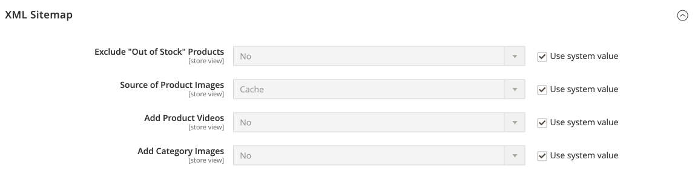
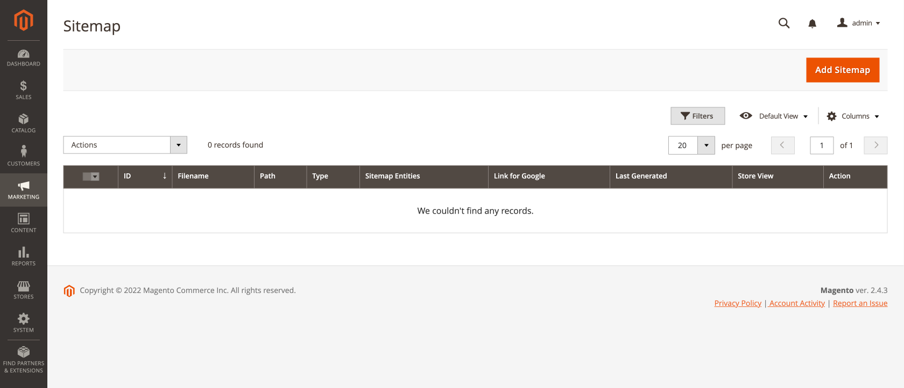
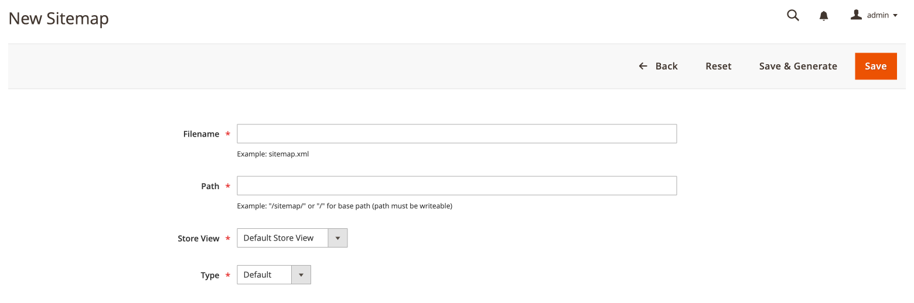

XML Sitemap
In addition to its settings, the Magento 2 XML Sitemap Extension also uses the basic Magento settings for the XML sitemap (Stores > Configuration > Catalog > XML Sitemap).
Configuration
Stores > Configuration > ECWHIM SEO > Sitemap > XML Sitemap

| FIELD | DESCRIPTION |
|---|---|
| Exclude "Out of Stock" Products | Allows you to exclude from the sitemap information about the pages of products that are out of stock. Options: Yes/No |
| Source of Product Images | Determines the source of product images for the sitemap. Options: Cache/Original |
| Add Product Videos | Determines whether to include product videos in the sitemap. Options: Yes/No |
| Add Category Images | Determines whether to include category images in the sitemap. Options: Yes/No |
Manage sitemaps
Marketing > SEO & Search > Sitemap (Ecwhim SEO)

Create a new sitemap
Click Add Sitemap to go to the sitemap creation page.

| FIELD | DESCRIPTION |
|---|---|
| Filename | The file name of the XML sitemap. For example: sitemap.xml |
| Path | Determines where the sitemap file is to reside on the server. Make sure that the path is writeable. For example: / - Places the sitemap file at the base path. /sitemap/ - Places the sitemap file in a directory called sitemap. |
| Store View | The store view where the sitemap applies. |
| Type | Determines the sitemap type. Options: Default - Combines information about pages of all entity types in the sitemap. Separated - Creates a separate sitemap for each selected entity type. The suffix corresponding to the entity type will be added to the file name. For example: sitemap_product.xml Composite - Combines information about the pages of the selected entity types in the sitemap. |
| Entity Type | Determines the types of entities whose page information should be added to the sitemap. |
CLI commands
- Log in to your Magento server as, or switch to, the file system owner.
- Navigate to your Magento project directory.
View a list of sitemaps
To view a list of all sitemaps:
php bin/magento ecwhim-seo:xmlsitemap:list
Generate sitemap(s)
Use this command to generate all or selected sitemaps.
Command options:
php bin/magento ecwhim-seo:xmlsitemap:generate [sitemap_id]
[sitemap_id] is a space-separated list of sitemap ids. Omit [sitemap_id] to generate all sitemaps.
Delete sitemap(s)
Use this command to delete all or selected sitemaps.
Command options:
php bin/magento ecwhim-seo:xmlsitemap:delete [sitemap_id]
[sitemap_id] is a space-separated list of sitemap ids. Omit [sitemap_id] to delete all sitemaps.